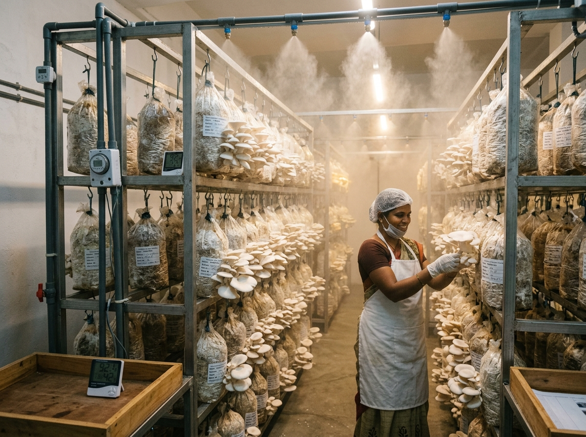

The Story Behind Our Farm
Founded in 2026 by three cousins, Organic Anabe began with a shared passion for sustainable agriculture and fresh, healthy food. Repurposing an existing shelter, we transformed the space into a state-of-the-art mushroom cultivation facility that merges modern farming technology with age-old organic principles.
eco
Our commitment is simple: 100% natural, zero chemicals.
We cultivate our mushrooms on premium, sustainable substrates made from paddy straw and hardwood pellets, creating the ideal natural environment for robust growth and rich flavor. By combining precise environmental controls with zero-chemical methods, we deliver pure, nutrient-dense mushrooms straight from our farm to your table.
group
3 Cousins Founded (2026)
home_repair_service
Repurposed Modern Facility
forest
Paddy Straw & Hardwood Pellets
local_shipping
Farm to Table Fresh

verified
State-of-the-Art Cultivation Facility